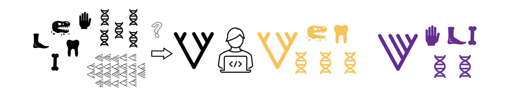
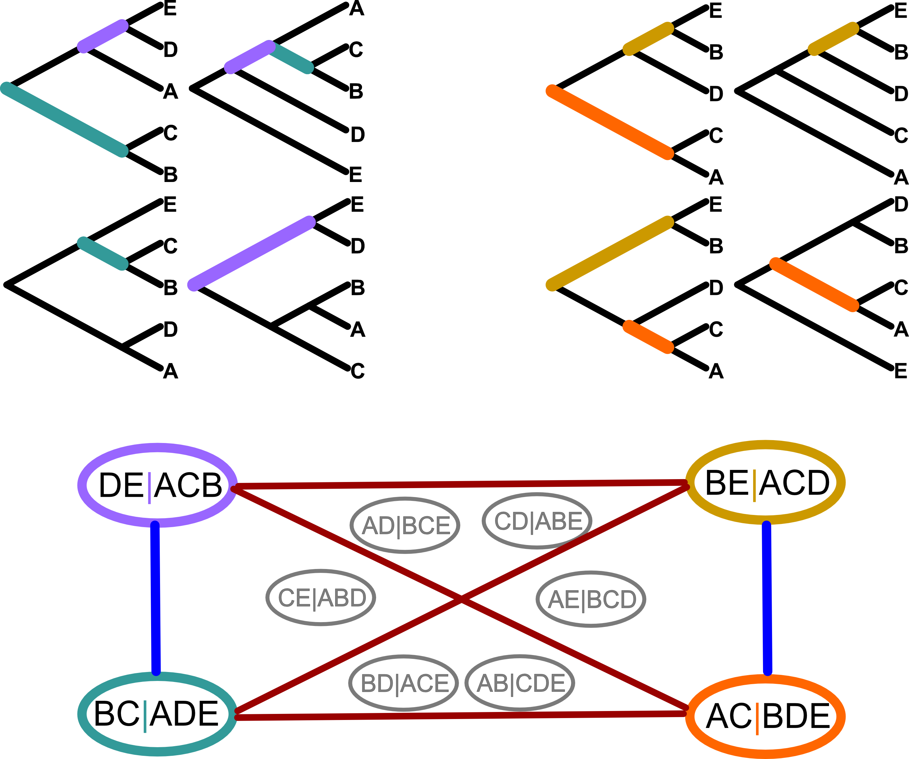

I am an evolutionary biologist with research in phylogenetics, methods development, comparative evolution, and conservation work.
Research Projects/Themes:
Phylogenetic Methods Loss of Sexually Selected Traits Conservation Computational SupportPhylogenetic Methods
Despite a recent plethora of genetic and morphological data, many interesting questions about the relationships between different groups remain unresolved. I've taken three different approaches to this issue.
Likelihood ratios across loci
In some cases large phylogenomic studies reach conflicting conclusions about important phylogenetic relationships, with each mutually exclusive possibility receiving very strong support in individual studies. I compared the behavior of maximum and marginal likelihood ratios when evaluating alternate resolutions of recalcitrant relationships among major squamate lineages. Mount & Brown, 2022
Network based community detection in tree sets
Variation in inferred gene trees is one of the most striking and consistent observations in phylogenomics. However, summarizing the information in trees is computationally difficult because trees are graphs, not numbers. I'm involved in developing and testing network based methods with the developers of CloudForest (previously called TreeScaper). Networks allow for less information loss than other multidimensional scaling methods. Additionally, we are using both topologies and bipartitions as nodes, providing complimentary information from the same tree set. Some of this work was included in Species Tree Inference: A Guide to Methods and Applications.
Morphological Modeling
Even with the current wealth of genomic data, morphological data is essential for estimating divergence times and fossil placement. However, for many taxa we do not have information about groups of characters (modules) that can be assumed to be evolutionarily linked, unlike genes or loci in genetic data where sequential base pairs are inherently grouped. I am working on applying models and methods used with genetic data to morphological datasets to morphological data to address these issues.

